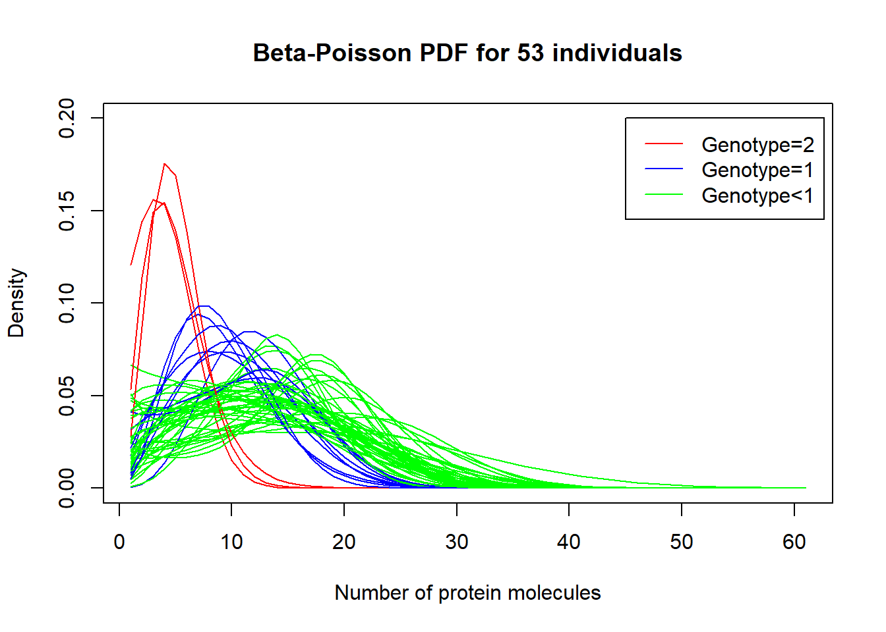
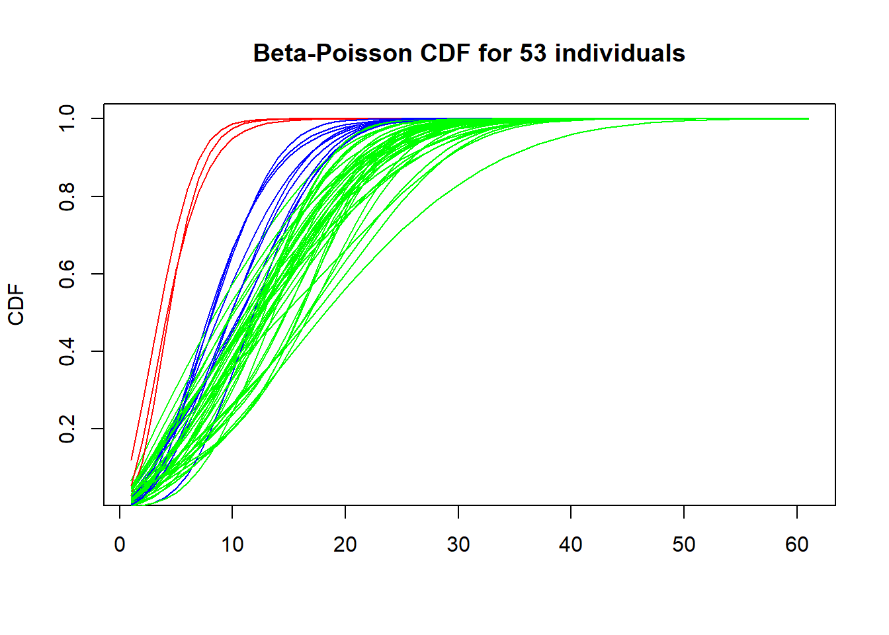

Last updated: 2020-02-17
Checks: 6 1
Knit directory: Thesis_single_RNA/
This reproducible R Markdown analysis was created with workflowr (version 1.5.0). The Checks tab describes the reproducibility checks that were applied when the results were created. The Past versions tab lists the development history.
Great! Since the R Markdown file has been committed to the Git repository, you know the exact version of the code that produced these results.
Great job! The global environment was empty. Objects defined in the global environment can affect the analysis in your R Markdown file in unknown ways. For reproduciblity it’s best to always run the code in an empty environment.
The command set.seed(20191113) was run prior to running the code in the R Markdown file. Setting a seed ensures that any results that rely on randomness, e.g. subsampling or permutations, are reproducible.
Great job! Recording the operating system, R version, and package versions is critical for reproducibility.
Nice! There were no cached chunks for this analysis, so you can be confident that you successfully produced the results during this run.
Using absolute paths to the files within your workflowr project makes it difficult for you and others to run your code on a different machine. Change the absolute path(s) below to the suggested relative path(s) to make your code more reproducible.
| absolute | relative |
|---|---|
| C:/Users/Moonkin/Documents/GitHub/Thesis_single_RNA/analysis/final_genotype_data.txt | analysis/final_genotype_data.txt |
| C:/Users/Moonkin/Documents/GitHub/Thesis_single_RNA/analysis/clean_dataset_for_analysis.txt | analysis/clean_dataset_for_analysis.txt |
| C:/Users/Moonkin/Documents/GitHub/Thesis_single_RNA/analysis/MLE.py | analysis/MLE.py |
Great! You are using Git for version control. Tracking code development and connecting the code version to the results is critical for reproducibility. The version displayed above was the version of the Git repository at the time these results were generated.
Note that you need to be careful to ensure that all relevant files for the analysis have been committed to Git prior to generating the results (you can use wflow_publish or wflow_git_commit). workflowr only checks the R Markdown file, but you know if there are other scripts or data files that it depends on. Below is the status of the Git repository when the results were generated:
Ignored files:
Ignored: .RData
Ignored: .Rhistory
Ignored: analysis/.RData
Ignored: analysis/.Rhistory
Untracked files:
Untracked: analysis/Filter.Rmd
Untracked: analysis/MLE_and_regression_for_235_genes.Rmd
Untracked: analysis/clean_dataset_for_analysis.txt
Untracked: analysis/estimates_for_235_genes.RData
Untracked: analysis/estimates_for_235_genes.rds
Untracked: analysis/final_genotype_data.txt
Untracked: analysis/genes_to_search.txt
Untracked: analysis/genotypes.txt
Untracked: analysis/regression_for_235_genes.txt
Untracked: analysis/rplot.jpg
Untracked: analysis/search_script.py
Unstaged changes:
Modified: Data_sim.Rmd
Modified: analysis/Chapter_2_analysis.Rmd
Modified: analysis/MLE.py
Modified: analysis/MLE_with_si.py
Modified: analysis/Question_1.Rmd
Modified: analysis/Real_data_filter.Rmd
Note that any generated files, e.g. HTML, png, CSS, etc., are not included in this status report because it is ok for generated content to have uncommitted changes.
There are no past versions. Publish this analysis with wflow_publish() to start tracking its development.
final_genotypes<-read.table("C:/Users/Moonkin/Documents/GitHub/Thesis_single_RNA/analysis/final_genotype_data.txt", header = T, sep = "\t")
clean_data<-read.table("C:/Users/Moonkin/Documents/GitHub/Thesis_single_RNA/analysis/clean_dataset_for_analysis.txt", header = T, sep = "\t")
library(reticulate)Warning: package 'reticulate' was built under R version 3.5.3library(robustbase)Warning: package 'robustbase' was built under R version 3.5.1library(dplyr)Warning: package 'dplyr' was built under R version 3.5.3
Attaching package: 'dplyr'The following objects are masked from 'package:stats':
filter, lagThe following objects are masked from 'package:base':
intersect, setdiff, setequal, unionsource_python("C:/Users/Moonkin/Documents/GitHub/Thesis_single_RNA/analysis/MLE.py")ENSG00000197728_genotype<-final_genotypes[2,]
ENSG00000197728_data<-clean_data[2,]estimate_MLE_one_gene_with_boot<-function(full_data,boot_n){
data_ind<-substr(colnames(full_data),0,7)
data_ind<-data_ind[2:length(data_ind)]
bootstrap<-list()
iter=0
for (i in unique(data_ind)){
if (i=="NA18498"){
next}
iter=iter+1
est=matrix(, boot_n, ncol = 3)
x=full_data[ , grepl(i, names(full_data))]
x=t(data.matrix(x))
for (j in 1:boot_n){
boot_x = as.matrix(x[sample(nrow(x),nrow(x),replace=TRUE)])
est[j,]=MaximumLikelihood(boot_x)}
bootstrap[[iter]]<-est}
return(bootstrap)}test<-estimate_MLE_one_gene_with_boot(ENSG00000197728_data,boot_n=100)weights_matrix=matrix(, 53, ncol = 3)
for (i in 1:53){
current_indiv<-test[[i]]
weights_matrix[i,1]=1/sqrt(var(current_indiv[,1],na.rm=TRUE))
weights_matrix[i,2]=1/sqrt(var(current_indiv[,2],na.rm=TRUE))
weights_matrix[i,3]=1/sqrt(var(current_indiv[,3],na.rm=TRUE))}estimate_MLE_one_gene<-function(full_data){
data_ind<-substr(colnames(full_data),0,7)
data_ind<-data_ind[2:length(data_ind)]
est=matrix(, nrow = (length(unique(data_ind))-1), ncol = 3)
info=matrix(, nrow = (length(unique(data_ind))-1), ncol = 2)
iter=0
for (i in unique(data_ind)){
if (i=="NA18498"){
next}
iter=iter+1
x=full_data[ , grepl(i, names(full_data))]
x=t(data.matrix(x))
est[iter,]=MaximumLikelihood(x)
info[iter,1]=i
info[iter,2]=dim(x)[1]}
estimates<-data.frame(est,info)
colnames(estimates)<-c("k_on","k_off","k_r","ind","n_cells")
return(estimates)}MLE_and_regression_for_multiple_genes<-function(dataset, current_genotype){
estimates<-estimate_MLE_one_gene(dataset)
current_genotype_for_analysis<-t(current_genotype)
current_genotype_for_analysis<-data.frame(colnames(current_genotype),current_genotype_for_analysis)
colnames(current_genotype_for_analysis)<-c("ind","genotype")
estimates<-left_join(estimates,data.frame(current_genotype_for_analysis), by = "ind")
estimates$genotype<-as.numeric(as.character(estimates$genotype))
#model_k_on<-lm(estimates$k_on~estimates$genotype,weights=weights[,1])
#model_k_off<-lm(estimates$k_off~estimates$genotype,weights=weights[,2])
#model_k_r<-lm(estimates$k_r~estimates$genotype,weights=weights[,3])
return(estimates)
}estimates<-MLE_and_regression_for_multiple_genes(ENSG00000197728_data,ENSG00000197728_genotype)Warning: Column `ind` joining factors with different levels, coercing to
character vectormodel_k_on_w<-lm(estimates$k_on~estimates$genotype,weights=weights_matrix[,1])
model_k_off_w<-lm(estimates$k_off~estimates$genotype,weights=weights_matrix[,2])
model_k_r_w<-lm(estimates$k_r~estimates$genotype,weights=weights_matrix[,3])
summary(model_k_on_w)
Call:
lm(formula = estimates$k_on ~ estimates$genotype, weights = weights_matrix[,
1])
Weighted Residuals:
Min 1Q Median 3Q Max
-1.5298 -0.3529 0.2347 0.7357 2.3186
Coefficients:
Estimate Std. Error t value Pr(>|t|)
(Intercept) 1.21554 0.07705 15.775 <2e-16 ***
estimates$genotype 0.53431 0.21551 2.479 0.0165 *
---
Signif. codes: 0 '***' 0.001 '**' 0.01 '*' 0.05 '.' 0.1 ' ' 1
Residual standard error: 0.8717 on 51 degrees of freedom
Multiple R-squared: 0.1076, Adjusted R-squared: 0.09006
F-statistic: 6.147 on 1 and 51 DF, p-value: 0.01651summary(model_k_off_w)
Call:
lm(formula = estimates$k_off ~ estimates$genotype, weights = weights_matrix[,
2])
Weighted Residuals:
Min 1Q Median 3Q Max
-3.432 -0.066 0.380 0.805 52.788
Coefficients:
Estimate Std. Error t value Pr(>|t|)
(Intercept) 0.7159 1.1456 0.625 0.535
estimates$genotype 1.6895 3.7560 0.450 0.655
Residual standard error: 9.543 on 51 degrees of freedom
Multiple R-squared: 0.003952, Adjusted R-squared: -0.01558
F-statistic: 0.2023 on 1 and 51 DF, p-value: 0.6548summary(model_k_r_w)
Call:
lm(formula = estimates$k_r ~ estimates$genotype, weights = weights_matrix[,
3])
Weighted Residuals:
Min 1Q Median 3Q Max
-6.424 -0.443 0.975 2.765 39.209
Coefficients:
Estimate Std. Error t value Pr(>|t|)
(Intercept) 21.751 2.066 10.53 2.15e-14 ***
estimates$genotype -1.678 5.414 -0.31 0.758
---
Signif. codes: 0 '***' 0.001 '**' 0.01 '*' 0.05 '.' 0.1 ' ' 1
Residual standard error: 7.124 on 51 degrees of freedom
Multiple R-squared: 0.001881, Adjusted R-squared: -0.01769
F-statistic: 0.09609 on 1 and 51 DF, p-value: 0.7578model_k_on<-lm(estimates$k_on~estimates$genotype)
model_k_off<-lm(estimates$k_off~estimates$genotype)
model_k_r<-lm(estimates$k_r~estimates$genotype)
summary(model_k_on)
Call:
lm(formula = estimates$k_on ~ estimates$genotype)
Residuals:
Min 1Q Median 3Q Max
-4.2954 -0.4779 -0.2745 0.2301 6.7212
Coefficients:
Estimate Std. Error t value Pr(>|t|)
(Intercept) 1.4056 0.2389 5.884 3.12e-07 ***
estimates$genotype 2.0121 0.3786 5.315 2.37e-06 ***
---
Signif. codes: 0 '***' 0.001 '**' 0.01 '*' 0.05 '.' 0.1 ' ' 1
Residual standard error: 1.546 on 51 degrees of freedom
Multiple R-squared: 0.3565, Adjusted R-squared: 0.3438
F-statistic: 28.25 on 1 and 51 DF, p-value: 2.371e-06summary(model_k_off)
Call:
lm(formula = estimates$k_off ~ estimates$genotype)
Residuals:
Min 1Q Median 3Q Max
-370.79 15.02 15.71 16.62 628.46
Coefficients:
Estimate Std. Error t value Pr(>|t|)
(Intercept) -14.78 20.54 -0.720 0.475
estimates$genotype 193.16 32.55 5.935 2.59e-07 ***
---
Signif. codes: 0 '***' 0.001 '**' 0.01 '*' 0.05 '.' 0.1 ' ' 1
Residual standard error: 132.9 on 51 degrees of freedom
Multiple R-squared: 0.4085, Adjusted R-squared: 0.3969
F-statistic: 35.22 on 1 and 51 DF, p-value: 2.593e-07summary(model_k_r)
Call:
lm(formula = estimates$k_r ~ estimates$genotype)
Residuals:
Min 1Q Median 3Q Max
-253.97 -0.49 5.03 11.63 464.30
Coefficients:
Estimate Std. Error t value Pr(>|t|)
(Intercept) 18.51 14.33 1.292 0.202
estimates$genotype 120.47 22.71 5.305 2.46e-06 ***
---
Signif. codes: 0 '***' 0.001 '**' 0.01 '*' 0.05 '.' 0.1 ' ' 1
Residual standard error: 92.73 on 51 degrees of freedom
Multiple R-squared: 0.3556, Adjusted R-squared: 0.3429
F-statistic: 28.14 on 1 and 51 DF, p-value: 2.458e-06Beta-Poisson PDf for 53 individuals per genotype
library(reticulate)
library(robustbase)
source_python("C:/Users/Moonkin/Documents/GitHub/Thesis_single_RNA/analysis/MLE.py")
plot((dBP(matrix(seq(0,60,by=1)),estimates[1,1],estimates[1,2],estimates[1,3])),type='l',col='green', main="Beta-Poisson PDF for 53 individuals", ylab="Density", xlab="Number of protein molecules", ylim=c(0,0.2))
for(i in 2:nrow(estimates)){
if (estimates[i,6]==2){
color="red"}
if (estimates[i,6]==1){
color="blue"}
if (estimates[i,6]<1){
color="green"}
lines((dBP(matrix(seq(0,60,by=1)),estimates[i,1],estimates[i,2],estimates[i,3])),type='l', col=color)
}
legend(45, 0.2, legend=c("Genotype=2", "Genotype=1", "Genotype<1"),
col=c("red", "blue", "green"),lty=1:1)
CDF for 53 individuals:
library(reticulate)
library(robustbase)
source_python("C:/Users/Moonkin/Documents/GitHub/Thesis_single_RNA/analysis/MLE.py")
plot(cumsum(dBP(matrix(seq(0,60,by=1)),estimates[1,1],estimates[1,2],estimates[1,3])),type='l',col='green', main="Beta-Poisson CDF for 53 individuals", ylab="CDF", xlab="")
for(i in 2:nrow(estimates)){
if (estimates[i,6]==2){
color="red"}
if (estimates[i,6]==1){
color="blue"}
if (estimates[i,6]<1){
color="green"}
lines(cumsum(dBP(matrix(seq(0,60,by=1)),estimates[i,1],estimates[i,2],estimates[i,3])),type='l', col=color)
}
sessionInfo()R version 3.5.0 (2018-04-23)
Platform: x86_64-w64-mingw32/x64 (64-bit)
Running under: Windows 10 x64 (build 17763)
Matrix products: default
locale:
[1] LC_COLLATE=English_United States.1252
[2] LC_CTYPE=English_United States.1252
[3] LC_MONETARY=English_United States.1252
[4] LC_NUMERIC=C
[5] LC_TIME=English_United States.1252
attached base packages:
[1] stats graphics grDevices utils datasets methods base
other attached packages:
[1] dplyr_0.8.3 robustbase_0.93-3 reticulate_1.13
loaded via a namespace (and not attached):
[1] Rcpp_1.0.2 knitr_1.20 magrittr_1.5 workflowr_1.5.0
[5] tidyselect_0.2.5 lattice_0.20-38 R6_2.3.0 rlang_0.4.2
[9] stringr_1.3.1 highr_0.7 tools_3.5.0 grid_3.5.0
[13] git2r_0.26.1 htmltools_0.3.6 assertthat_0.2.0 yaml_2.2.0
[17] rprojroot_1.3-2 digest_0.6.17 tibble_2.1.3 crayon_1.3.4
[21] Matrix_1.2-14 purrr_0.2.5 later_0.8.0 fs_1.3.1
[25] promises_1.0.1 glue_1.3.0 evaluate_0.11 rmarkdown_1.10
[29] stringi_1.1.7 pillar_1.4.2 DEoptimR_1.0-8 compiler_3.5.0
[33] backports_1.1.2 jsonlite_1.5 httpuv_1.5.1 pkgconfig_2.0.2